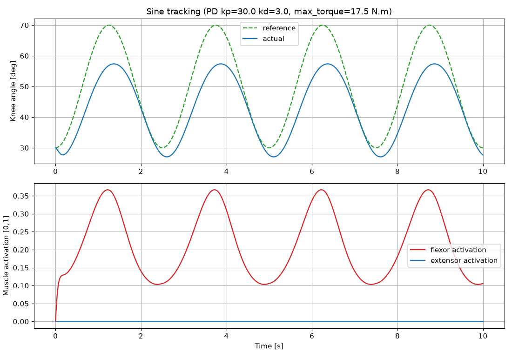
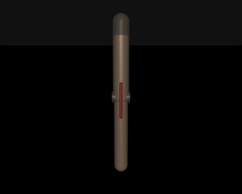
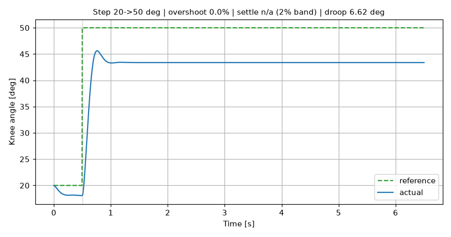

膝关节肌肉骨骼仿真与轨迹跟踪控制 (mujoco_musculoskeletal_knee_tracking)
模块归属：肌肉骨骼人 / 下肢 · 功能：控制 运行环境：Ubuntu 22.04 + ROS 2 Humble + Python 3.10 + MuJoCo 3.16.0
本模块使用 MuJoCo 建立单关节膝关节肌肉骨骼模型，以屈肌（腘绳肌近似）/ 伸肌（股四头肌近似） 两条拮抗肌肉驱动胫骨，通过 PD 控制器实现正弦 / 阶跃轨迹跟踪，并发布关节角、肌肉激活与实际力矩。适合用于理解"肌肉如何通过肌腱驱动机器人关节、PD 控制器如何跟踪轨迹"。
1. 原理 (Theory)
1.1 肌肉骨骼模型
- 股骨（femur）：固定于髋端，向下延伸；胫骨（tibia） 通过
knee铰链关节（绕 x 轴）连接，可屈伸。 - 两条拮抗肌肉通过肌腱（tendon） 驱动关节：
- 屈肌（flexor）：激活时产生屈曲（关节角增大）；
- 伸肌（extensor）：激活时产生伸展（关节角减小）。
- 肌腱绕过关节处的 wrap 圆柱（knee_wrap），提供恒定正力矩臂，避免肌腱在屈曲大角度时长度趋零引发的非物理被动力。
1.2 坐标约定
0°= 完全伸展（小腿竖直下垂，自然平衡）；- 正角 = 屈曲；关节限位
-15° ~ 90°，建议控制轨迹10° ~ 70°。
1.3 PD 控制器 → 拮抗肌肉激活
记误差 e = θ_desired − θ_actual，关节角速度 q̇：
τ = kp·e − kd·q̇
所需力矩 τ 归一化到肌肉激活（max_torque 为肌肉等效最大力矩）：
若 τ ≥ 0 (需屈曲): flexor = clamp(τ / max_torque), extensor = 0
若 τ < 0 (需伸展): extensor = clamp(−τ / max_torque), flexor = 0
另含两类安全保护：数值检查（非法输入 → 激活归零）与双向限位保护（到 90° 上限仍要屈曲 → 停屈肌；到 −15° 下限仍要伸展 → 停伸肌）。
2. 接口 (Interfaces)
| 话题 | 类型 | 方向 | 说明 |
|---|---|---|---|
knee/reference |
std_msgs/Float64 |
订阅 | 目标角度 [deg]，外部下发可覆盖内置轨迹 |
knee/angle |
std_msgs/Float64 |
发布 | 当前关节角 [deg] |
knee/activation |
std_msgs/Float64MultiArray |
发布 | [flexor, extensor] 激活 |
knee/torque |
std_msgs/Float64 |
发布 | 执行器广义力 [N·m] |
3. 配置 (Configuration)
见 config/params.yaml：
| 参数 | 默认 | 说明 |
|---|---|---|
sim.dt |
0.005 | 仿真步长 [s]，会写入 model.opt.timestep |
sim.duration |
30.0 | 内置轨迹时长 [s] |
trajectory.type |
sine | sine | step |
trajectory.amplitude_deg |
40.0 | 轨迹幅值 [deg] |
trajectory.frequency_hz |
0.4 | 正弦频率 [Hz] |
trajectory.bias_deg |
30.0 | 轨迹偏置 [deg] |
ctrl.kp |
30.0 | 比例增益 [N·m/rad] |
ctrl.kd |
3.0 | 微分增益 [N·m·s/rad] |
ctrl.max_torque |
17.5 | 肌肉等效最大力矩 [N·m]，= 单肌 500 N × wrap 半径 0.035 m |
ctrl.limit_deg |
90.0 | 屈曲上限 [deg] |
ctrl.limit_low_deg |
-15.0 | 伸展下限 [deg] |
sim.exit_after_duration |
false | true：内置轨迹跑完后节点自动退出 |
关于 sim.duration：内置轨迹跑满 duration 后节点执行安全停止（激活归零，关节回落到下垂位）。
一旦收到 /knee/reference 外部目标，就切换到外部跟踪模式，不再受 duration 限制。
4. 依赖与构建 (Dependencies & Build)
# Python 依赖（MuJoCo 通过 pip 安装，不是 rosdep key）
python3 -m pip install -r requirements.txt
cd ~/ros2_ws/src
git clone <模块仓库> mujoco_musculoskeletal_knee_tracking
cd ~/ros2_ws
colcon build --packages-select mujoco_musculoskeletal_knee_tracking
source install/setup.bash
5. 运行 (Run)
# 推荐: launch
ros2 launch mujoco_musculoskeletal_knee_tracking main.launch.py
# 或: 直接运行
ros2 run mujoco_musculoskeletal_knee_tracking mujoco_musculoskeletal_knee_tracking_node
查看输出：
ros2 topic echo /knee/angle
ros2 topic echo /knee/activation
ros2 topic echo /knee/torque
外部下发目标角度（覆盖内置正弦轨迹）：
ros2 topic pub /knee/reference std_msgs/Float64 "{data: 50.0}" --once
6. 离线演示 (Offline demo)
不依赖 ROS 2，直接生成运行效果 GIF / 评价图 / 指标：
python3 simulate_tracking.py # 带图形环境：生成 GIF + 曲线 + 指标
python3 simulate_tracking.py --no-render # 无图形/远程环境：只出曲线与指标
输出（默认写到 results/）：tracking.gif（< 5 MB）、tracking_eval.png（正弦段）、tracking_step.png（阶跃段）、tracking_metrics.txt。
simulate_tracking.py 与 validate_model.py 的参数统一从 config/params.yaml 读取，改一处即同时生效。
7. 运行效果 (Results)
正弦轨迹跟踪（bias=30°、幅值 40°、0.4 Hz、PD kp=30 kd=3）：


阶跃响应（20° → 50°，用于给出超调与调节时间）：

8. 数据与评价 (Data & Metrics)
指标分两段，口径不同：
正弦段（bias=30°、amp=40°、0.4 Hz）——参考持续变化，不存在超调/调节时间，只报告：
- RMSE：角度误差均方根；
- 最大绝对误差。
阶跃段（20° → 50°）——用于给出超调、调节时间与稳态误差：
- 超调：相对阶跃幅值的百分比；
- 调节时间：进入并保持在 ±2% 带宽内的时间；
- 稳态误差：末段平均值与目标之差。
默认参数（PD kp=30 kd=3，max_torque=17.5 N·m）结果：
| 指标 | 数值 |
|---|---|
| 正弦 RMSE | 8.65° |
| 正弦最大绝对误差 | 13.96° |
| 阶跃超调 | 0.0 % |
| 阶跃调节时间 | 未进入 ±2% 带（进入 ±5° 需 0.22 s） |
| 阶跃稳态误差 | −6.62°（低于目标） |
稳态下垂的主因是重力矩未做前馈补偿：PD 在误差为 0 时输出为 0，维持屈曲姿态所需的重力矩只能靠残余误差换取。正弦段的 RMSE 同样以重力矩偏差为主，PD 的相位滞后作为叠加因素。
9. 故障处理 (Troubleshooting)
| 现象 | 可能原因 | 处理 |
|---|---|---|
| 关节不运动 | mujoco 未安装 |
python3 -m pip install -r requirements.txt |
| 跟踪幅值明显不足 | kp 过小或 max_torque 过大 |
增大 kp，确认 max_torque 约等于肌肉实际最大力矩（本模型 = 500 N × 0.035 m = 17.5 N·m） |
| 高频振荡 | kd 不足 |
增大 kd |
| 触到限位剧烈冲击 | 轨迹幅值过大 | 控制轨迹保持在 10°~70° 内 |
| 模型无法加载（中文路径） | 文件路径含特殊字符 | 用 from_xml_string 读取（本模块已内置），或使用纯英文路径 |
| 远程/无图形环境报 OpenGL 错误 | 无渲染后端 | 加 --no-render，或设置 MUJOCO_GL=egl |
10. 附：本地验证 (Local validation)
python3 validate_model.py # 含渲染
python3 validate_model.py --no-render # 无图形环境
验证：模型可加载、单独激活屈肌→屈曲、单独激活伸肌→伸展、无控制→0° 平衡、双向限位生效，并（可选）输出 results/model_render.png。
单元测试覆盖控制器纯逻辑与模型集成（模型加载、屈肌/伸肌方向、关节限位、max_torque 与模型参数一致性）：
python3 -m pytest test -q
本模块开发过程中使用了大模型辅助（代码生成与调试），并对提交内容负责。